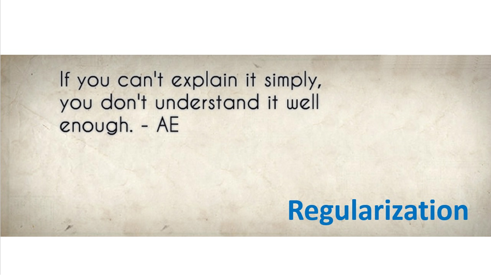
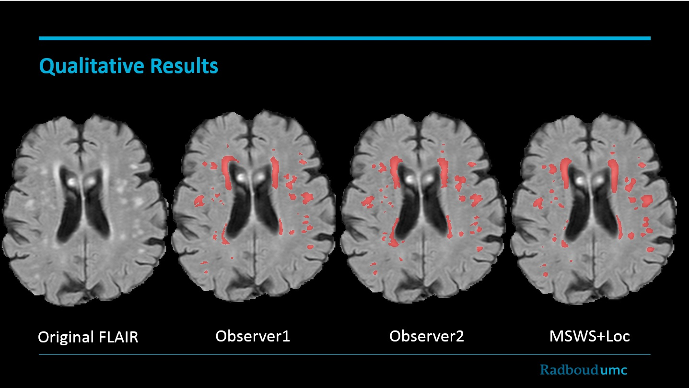
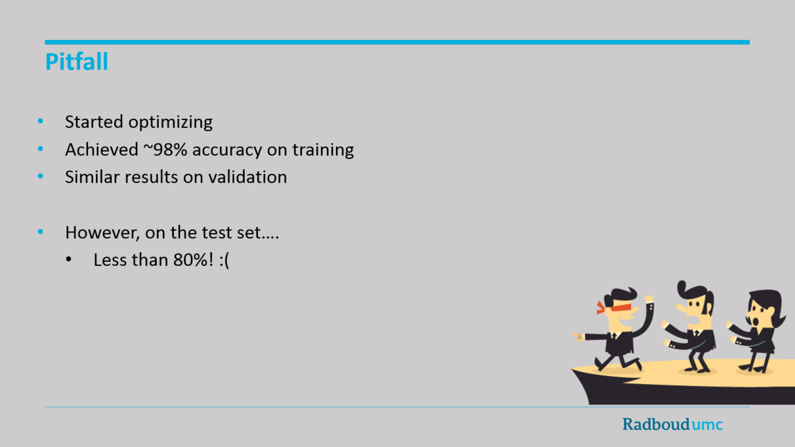

My Presentations
To me giving a lecture is a fun way to review my knowledge from a different perspective and to get a deeper understanding of the subject. Following are some of my presentations on a number of topics I am interested in:
State-of-the-art Convnets(March 2016) This is my lecture on the state-of-the-art convolutional neural network architectures for the imagenet visual recognition task, including the Alex-net, VGG-net, GoogLeNet, Res-net and Highway-nets. |
 |
Training a Convnet(March 2016) A lecture on the basic concepts of training a convolutional neural network, including the loss function, error back-propagation, (stochastic) gradient descent, various update rules, regularization techniques and network babysitting. |
 |
Location-sensitive Convnets for WMH Segmentation on Brain MRI(March 2016) My presentation on the method I developed for segmentation of white matter hyperintensities (WMH), using a multi-scale location-sensitive architecture. |
 |
Deep Learning for Automated Detection of Lacunes(May 2017) My presentation on the deep two-stage convolutional neural network I developed for detection of lacunes. |
 |